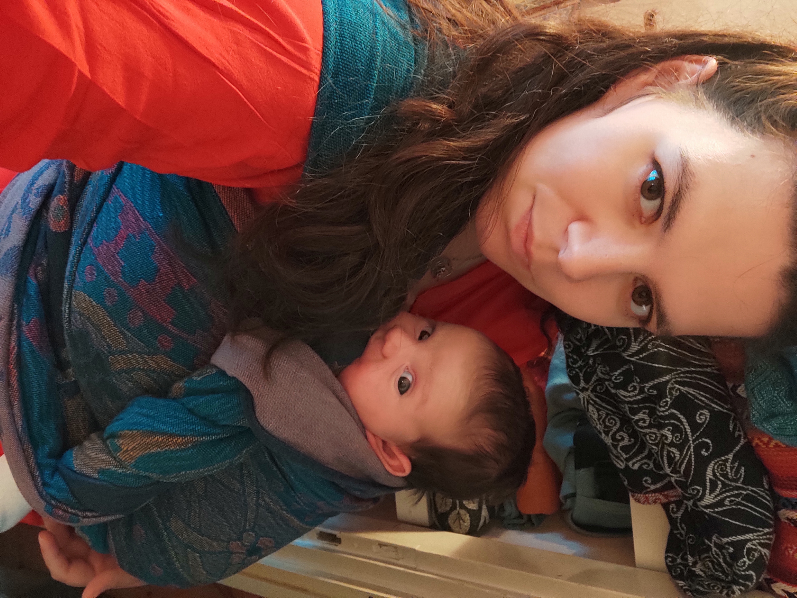
Mi chiamo Gaia e vi voglio raccontare come sono diventata un'Operatrice Materno Infantile.
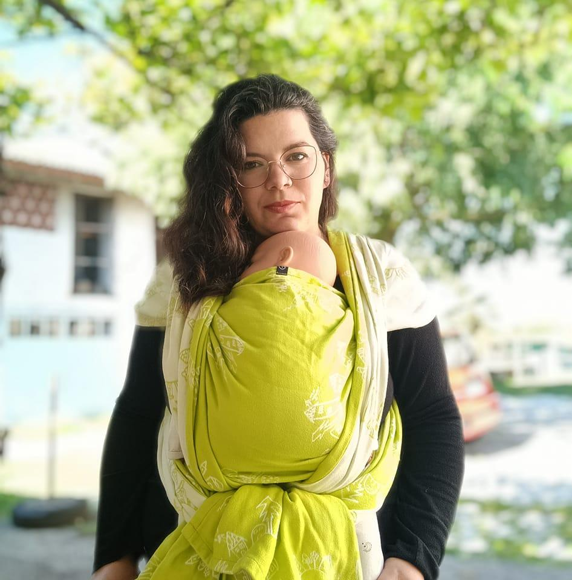
La mia strada come doula è iniziata nel 2018, dopo la nascita del mio primo figlio, Francesco. Quel periodo non è stato semplice e mi ha fatto capire quanto sia importante avere accanto qualcuno che ascolta davvero. Da lì è nato il desiderio di formarmi per poter offrire ad altre famiglie il sostegno che avrei voluto ricevere.
Ho iniziato come Peer Supporter per l'allattamento con Custodi del Femminino® e, passo dopo passo, ho continuato a crescere: sono diventata Custode della Nascita®, Trainer Olistica Materno Infantile®, Custode del Portare Junior® e Operatrice di Massaggio Infantile. Negli anni ho approfondito anche il babywearing, l'allattamento e il sonno infantile, con percorsi MaBS e Mamme Con‑Tatto®.
Oggi accompagno le famiglie con un approccio semplice, rispettoso e vicino: niente giudizi, niente pressioni. Solo presenza, ascolto e strumenti pratici per affrontare insieme i momenti più delicati.
Da qualche anno collaboro con La Dea Lattea, una realtà nata dalla mente di Donne e Uomini che credono che la divulgazione sia importante e ha scelto di accompagnare le donne e le famiglie nei momenti più delicati della loro vita e di formare figure che facciano lo stesso. Nel 2025 La Dea Lattea è finalmente diventata una A.P.S. di cui sono onorata di essere la presidente.
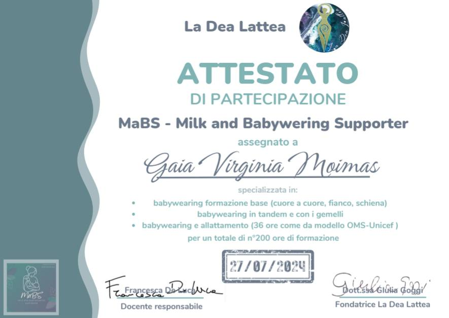
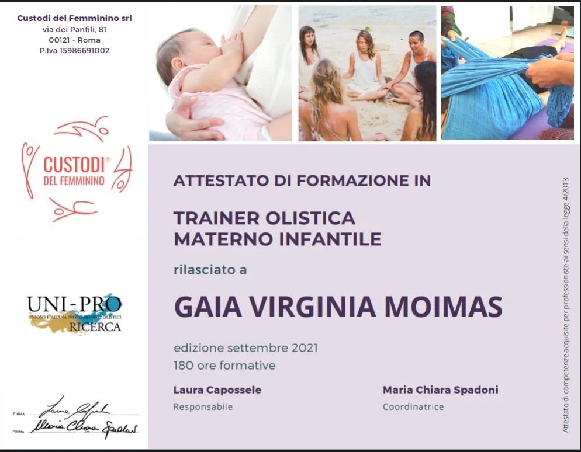
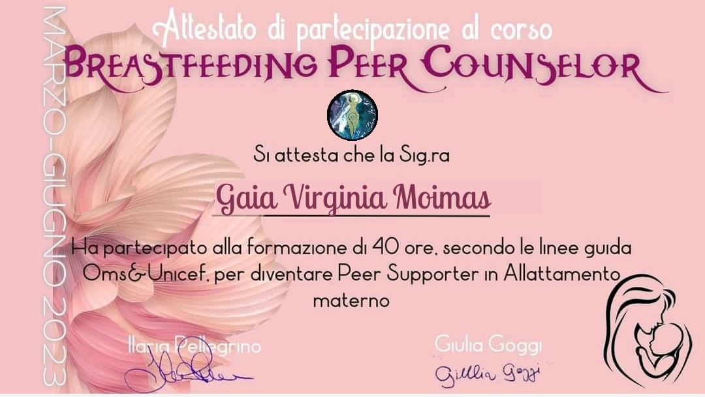
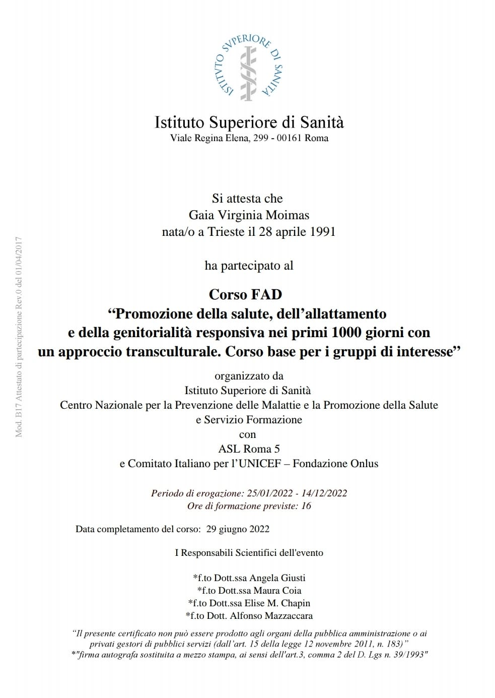
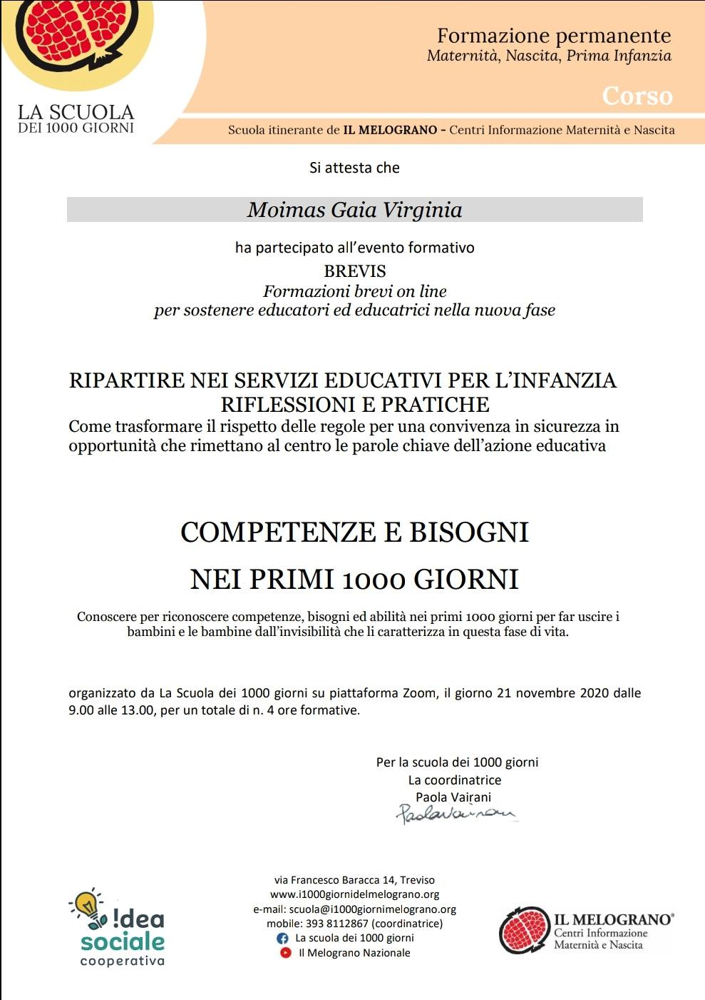
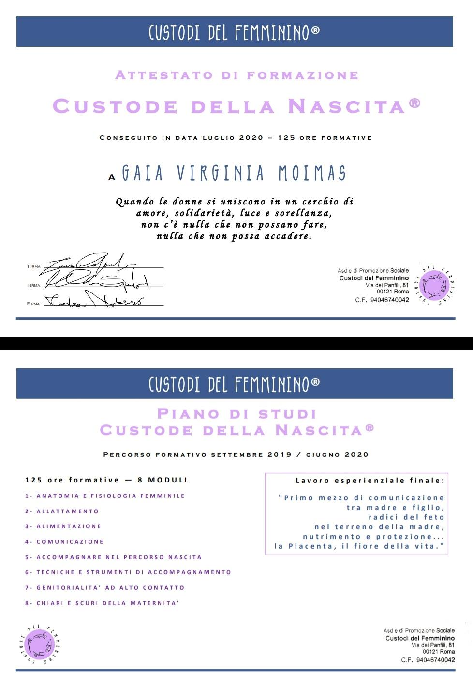
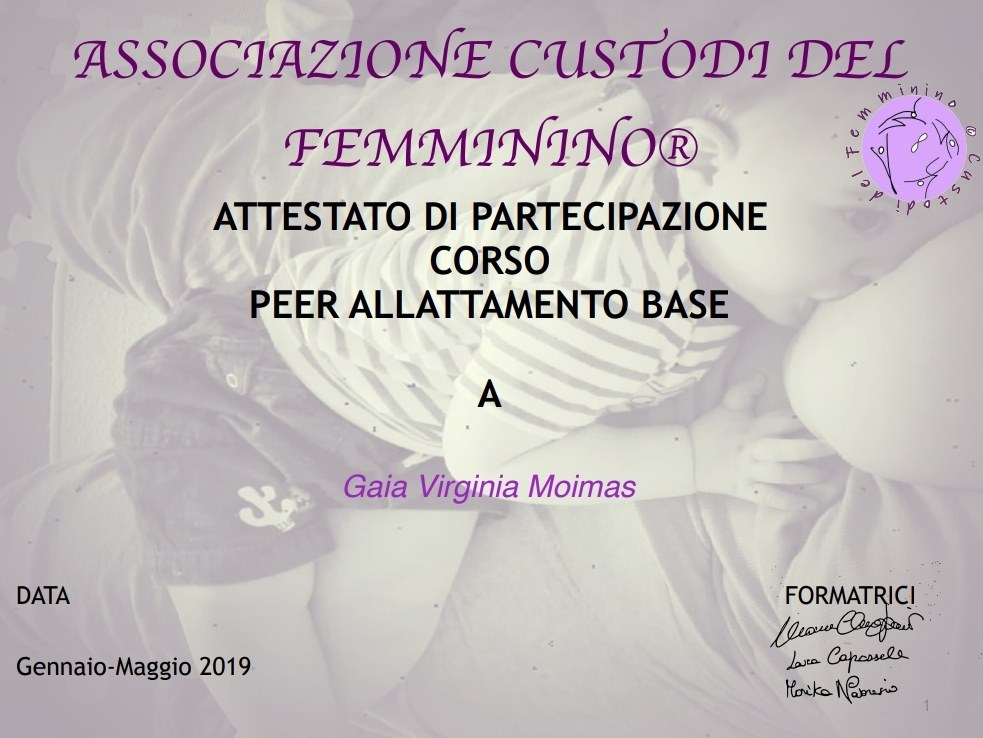
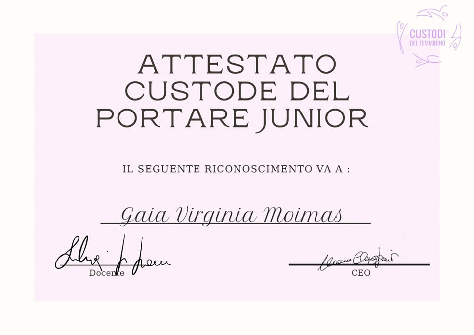
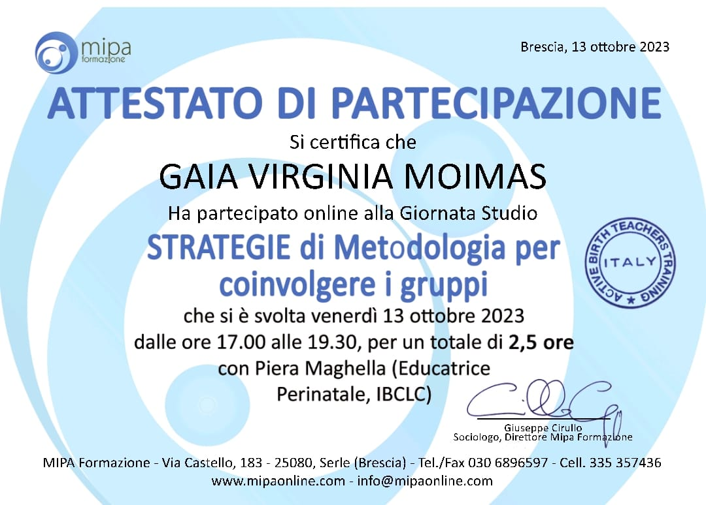
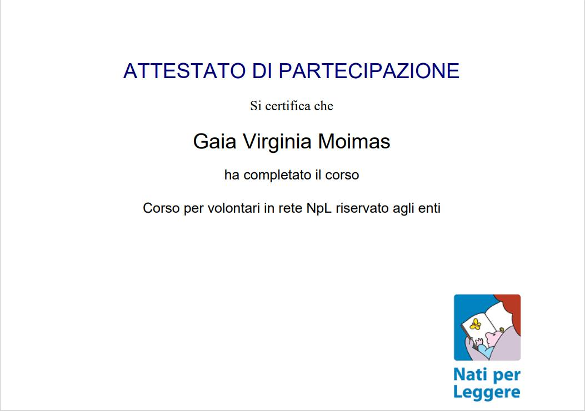